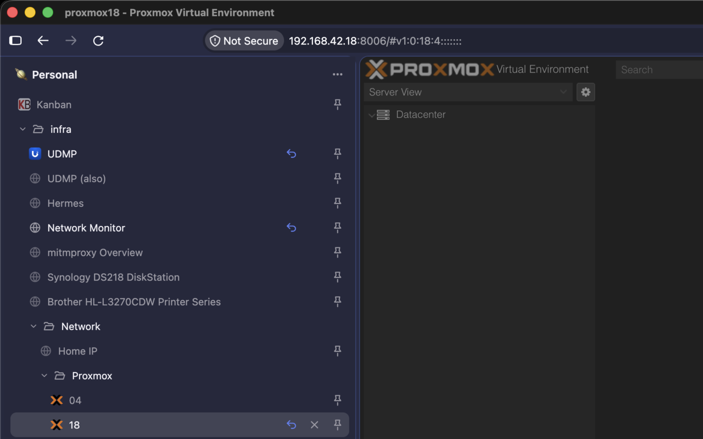
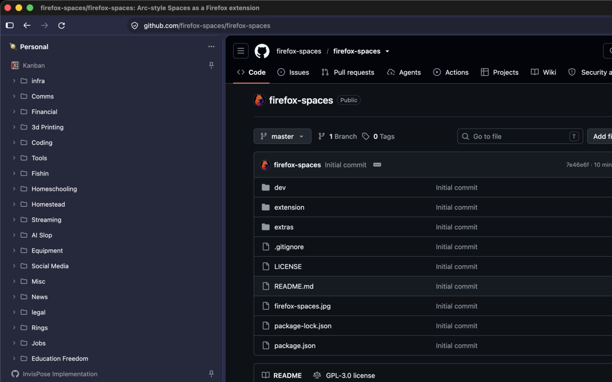

Spaces
- Named spaces with an emoji or icon and a color. Each window shows one space at a time.
- Switching is instant: other spaces' tabs are hidden, not closed.
- Optionally tint the window with the current space's color.
Firefox extension · Free and open source
A vertical tab sidebar that groups your tabs into spaces, keeps the sites you use every day pinned in nested folders, and tidies everything else away on its own. Each space can have its own profile, with separate cookies and logins.
Requires Firefox 142 or newer. Collects no data.
Spaces replaces Firefox's tab bar with a sidebar built around how you actually work: a few separate contexts, a set of sites you always keep, and a lot of tabs you only need for a day.
The sidebar takes the place of Firefox's horizontal tab bar.




Install Spaces and the sidebar opens on its own. Right-click in it to create spaces and folders.
| Action | Windows / Linux | Mac |
|---|---|---|
| Quick switcher | Ctrl+Shift+Space | ⌘+Shift+Space |
| Next space | Ctrl+Alt+→ | Control+Option+→ |
| Previous space | Ctrl+Alt+← | Control+Option+← |
| Show or hide the sidebar | Ctrl+Alt+S | Control+Option+S |
You can also switch spaces by swiping sideways with two fingers over the sidebar. Every shortcut can be changed in about:addons → ⚙ → Manage Extension Shortcuts.
Firefox doesn't let extensions hide its horizontal tab bar, but a two-minute setup does. Spaces offers to walk you through it, and the guide is always under ⚙ Settings. By hand:
about:config, set toolkit.legacyUserProfileCustomizations.stylesheets to true.about:support, click Open Folder next to Profile Folder. Make a chrome folder there and put userChrome.css in it.Everything stays in your browser. Spaces has no servers and sends nothing anywhere. Bookmarks access is only requested if you turn on syncing.
Found a bug or have an idea? Open an issue on GitHub. For bugs, include your Firefox version, your Spaces version and the steps that cause the problem.
Spaces is free software under the GNU General Public License v3.0. It isn't affiliated with Mozilla or The Browser Company.